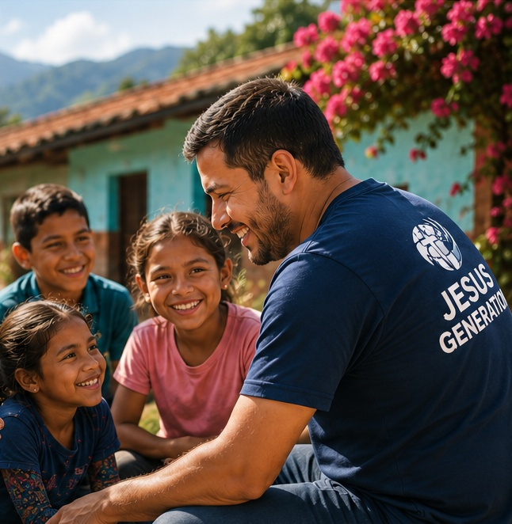
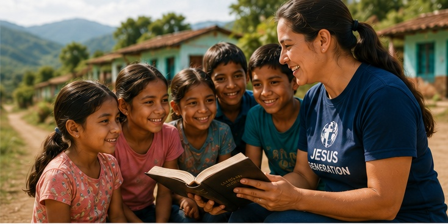
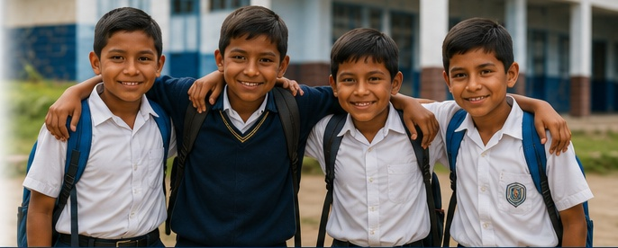

CHRIST CENTERED
We proclaim the Gospel and make disciples.

About Us
Jesus Generation is an international evangelical movement committed to reaching school-age children with the Gospel of Jesus Christ and equipping the people who will disciple and lead them.
Our primary field strategy is school chaplaincy. Our mission extends through evangelism, discipleship, missions, leadership development, churches, families, and communities. And through Jesus Generation Academy, we provide the training needed to prepare chaplains, pastors, missionaries, and Christian leaders to multiply the work.
The Jesus Generation name represents a new chapter, but the ministry behind it has been developing for more than three decades.
We proclaim the Gospel and make disciples.
We stand on the truth of God’s Word.
We serve children, families, and communities.
We partner to reach nations with the love of Jesus.
Who We Are
The About section should be the place where a serious visitor gains confidence in Jesus Generation. A potential partner should understand that this is an established international ministry, not a new idea. A mission participant should understand that they are joining national leaders and ministries that already exist. An Academy student should understand that the training grows out of decades of practical ministry experience.
Jesus Generation exists around a simple conviction:
Every child should have the opportunity to hear the Gospel clearly, know Jesus Christ personally, grow as a disciple, and be equipped to reach others.
Our particular calling is to school-age children. Schools gather children, educators, families, and communities in a way few other institutions do. Through trained Christian chaplains, Jesus Generation can establish an ongoing ministry presence rather than depending solely upon occasional events.
But Jesus Generation is more than school chaplaincy.
 The Academy equips leaders.
The Academy equips leaders.Our goal is not to build dependency upon outside missionaries.
Our goal is multiplication.
Our Mission
To reach school-age children with the Gospel of Jesus Christ, make disciples, and equip chaplains, pastors, missionaries, and Christian leaders to carry the Gospel into their schools, families, communities, and nations.
Our Vision
To see a generation transformed by Jesus Christ and equipped to reach the generation that follows.
Reach → Evangelize → Disciple → Train → Equip → Send → Multiply
This strategic framework connects every part of Jesus Generation.
Our Story
What began as a small step of faith has grown into a global movement impacting school-age children and equipping leaders across Latin America and beyond.
The story began in Central America during the violence surrounding the Sandinista conflict. Rocky Malloy was serving in Honduras when he met Joske, a Dutch nurse who had also come to serve people affected by the conflict. Together they witnessed the devastating consequences that war, instability, poverty, and violence could have on children. What they saw created a burden that would shape the direction of their ministry. The early work became Shield of Faith Ministries, focused on bringing biblical truth and Christian ministry to children and families.
When the ministry later moved into Bolivia, the burden for vulnerable children deepened. Ministry among children living and working on the streets exposed the realities of abandonment, exploitation, trafficking, abuse, and extreme vulnerability.
Children who remained connected to school were far more likely to remain connected to structure, family, community, responsible adults, and protection. It was no longer only: How do we reach children once they are already on the street? It became: How do we reach them before the street ever claims them? The answer increasingly pointed toward schools.
The ministry began developing relationships with educators, schools, pastors, churches, and community leaders. Schools provided access to children on a scale individual outreach could never match. The strategy began shifting from intervention after crisis toward sustained ministry before crisis. As the ministry became increasingly school-centered, the name Shield of Faith Ministries no longer adequately described the work. The organization became Mission Generation. The new identity also provided greater flexibility in political environments where ministries had to navigate hostility toward churches or explicitly religious institutions while remaining faithful to the Gospel. The Gospel did not change. The strategy did.
Today, Jesus Generation continues that mission—bringing the Gospel, discipleship, and hope to schools, families, churches, communities, and nations.
Over time, the ministry discovered that school chaplaincy provided an even stronger model. A program could visit. A missionary could travel home. A curriculum could end. A chaplain could remain.
Chaplains became trusted spiritual leaders within school communities, serving students, educators, families, and local leaders. In many of the Latin American communities where the ministry developed, chaplains could exercise significant pastoral ministry, including prayer, biblical teaching, Gospel proclamation, discipleship, and personal ministry in the name of Jesus Christ.
As ministry expanded, another principle became increasingly important. The future of the work could not depend primarily upon foreign missionaries. Pastors, chaplains, national directors, educators, and Christian leaders within the nations themselves needed to carry responsibility for the mission.
Jesus Generation therefore grows through local and national leadership. Mission teams come alongside them. Partners strengthen them. Training equips them. But they remain when visitors leave.
Chaplaincy was the primary vehicle. But chaplaincy was never the entire mission. The mission had always been about reaching children, proclaiming Jesus Christ, making disciples, strengthening families, and raising Christian leaders. Jesus Generation brings that calling clearly to the forefront.
Today, the ministry draws upon decades of experience, approximately 50,000 chaplains and ministry workers, relationships with 41,000 schools, national leadership, missions, discipleship, and Christian education. And now another part of the original calling can grow significantly: equipping those who carry the Gospel.
Jesus Generation Academy brings education and ministry training into one international platform. A chaplain can be trained and certified. A pastor can receive theological education. A missionary can prepare before entering the field. A national leader can develop leadership skills. A believer can learn to evangelize and disciple others. And experienced leaders can eventually be prepared to train the next generation of leaders.
The story that began by reaching vulnerable children has become a strategy for reaching and equipping generations.
The names have changed as the ministry developed: Shield of Faith Ministries. Mission Generation. Jesus Generation. But the heartbeat has remained:
Reach the child. Proclaim Jesus. Make disciples. Equip leaders. Multiply the Gospel.
And the greatest chapter may still be ahead.
What We Believe
Jesus Generation is unapologetically evangelical. Our beliefs guide everything we do—from the way we serve to the way we partner and lead. Our theology is not separate from our mission. It is the reason for our mission.
The Bible is the inspired and authoritative Word of God.
God is one God eternally existing as Father, Son, and Holy Spirit.

Jesus Christ is fully God and fully man, lived without sin, died for our sins, rose bodily from the dead, and is Lord.
Salvation is God’s gift of grace received through repentance and faith in Jesus Christ.
The Holy Spirit indwells and empowers believers for Christian life and service.
Prayer is essential to Christian life and ministry.
The Church is the Body of Christ and is called to worship, disciple, serve, and carry the Gospel into the world.
The Great Commission belongs to every follower of Jesus.
Discipleship means helping believers become lifelong followers of Christ.
The Next Generation is precious to God and must have the opportunity to hear, understand, and respond to the Gospel.
Global Impact
Jesus Generation’s international reach was not created by briefly visiting many nations. It has developed through relationships built over decades.
Today the network includes approximately:
The numbers demonstrate scale. The real impact is what happens through them:
Future country pages should tell those stories nation by nation.

Leadership
Jesus Generation is not built around one personality or one international office. Pastors, chaplains, missionaries, national directors, educators, ministry leaders, and Christian professionals carry it within their own cultures and communities. International leadership provides vision, resources, training, accountability, and coordination. Regional and national leaders provide local relationships, cultural understanding, supervision, and continuity. Chaplains and field leaders carry the ministry into everyday life. Jesus Generation Academy strengthens that structure by developing new leaders and preparing experienced leaders to train others. Our objective is not simply to have more followers. It is to develop leaders who develop other leaders.
Accountability
At Jesus Generation, our commitment to partners is straightforward:
We will do what we say we will do, when we say we will do it, and communicate honestly about the results.
When a church sends a mission team, a donor supports training, a partner funds an initiative, or an Academy student entrusts us with their education, that relationship carries responsibility.
We seek to be accountable through responsible stewardship, clear project objectives, appropriate financial oversight, honest communication, ministry reporting, child safeguarding, ethical leadership, responsible use of donor information, accountability to ministry partners, and faithfulness to the Gospel.
Our partners should be able to ask: What did we agree to do? Did we do it? What happened because of it? What comes next?
Trust must be earned through performance, communication, integrity, and faithfulness. Accountability is framed around performance, communication, stewardship, integrity, and faithfulness—not borrowed third-party accolades.
Our ministry is rooted in God’s Word and prayer.
We are accountable to our partners, not the world.
We use every resource to maximize Kingdom impact.
We stand firm on the Gospel and our Christian values.
